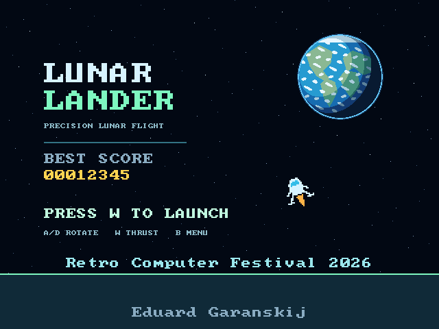

Luna Station is a hobby project celebrating the 60th anniversary of Luna 9’s Moon landing, created for the Retro Computer Festival in Cambridge.
FIRST GAME
Lunar Lander is the console’s first game. Rotate your spacecraft, fire the engine and land gently before the fuel runs out. Narrow pads score ×2 or ×4, but land too fast or at an angle and you’ll crash.
WHAT’S INSIDE?
An FPGA is a chip whose circuits can be configured to make a custom computer. Inside Luna Station are a tiny processor, memory, a video engine and an SD-card reader — all described in hardware logic.
The game runs with just 8 KB of RAM and uses integer “fixed-point” maths for its flight physics.


TECH SPECS
- BOARDSipeed Tang Nano 9K FPGA
- CPURISC-V PicoRV32 · 27 MHz
- VIDEOHDMI 640×480 at 60 Hz
- GAMESFAT SD card · USB updates
- SOUNDESP32 · MAX98357A amplifier
- CONTROLESP-NOW wireless gamepads
MOON FIRSTS
Luna 9 · 3 February 1966: the first automatic soft landing of a spacecraft on the Moon.
Apollo 11 · 1969: Neil Armstrong and Buzz Aldrin became the first people to walk on the Moon.